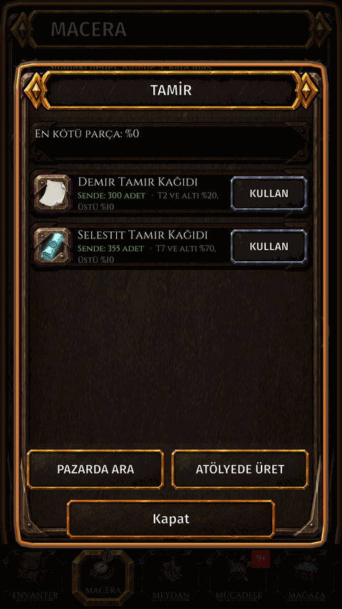
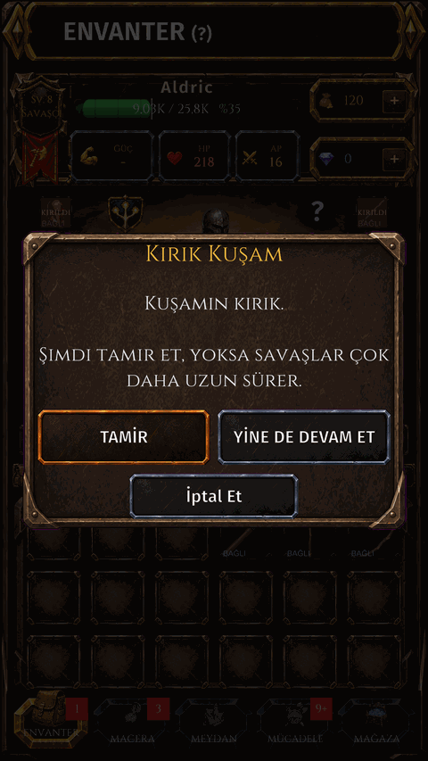

Durability and repair
What it is
Gear wears down while you fight and gather. A broken item gives no stats until it is repaired with a repair paper.
How to get there
- INVENTORY.
- Tap an equipped item, then ••• and Repair.
- Or tap a repair paper in your bag.


Screen shown in Turkish.
What wears
- Only equipped items wear. In fights your weapons, armor and accessories wear.
- While gathering your clothing and the tool of that profession wear; weapons do not.
- Workshop tools, skins and pets never wear.
When it breaks
- The item shows BROKEN. It is not lost, but it gives no stats at all, not even its bonus stats or runes, and your fights take much longer.
- When you start with broken gear the game warns you: REPAIR or CONTINUE ANYWAY.
How to do it
- Open the repair screen, pick a repair paper and tap USE. One paper repairs ALL your equipped items at once.
- A higher tier paper repairs more. Items above the paper's tier get only a small repair.
- The Adventure screen also has a REPAIR button.
Where it comes from
- Repair papers are made by Blacksmithing in the workshop, sold on the market and given by some quests.
- No paper? The repair screen offers FIND IN MARKET and CRAFT IN WORKSHOP.